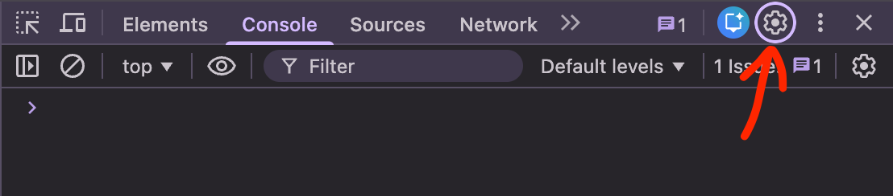
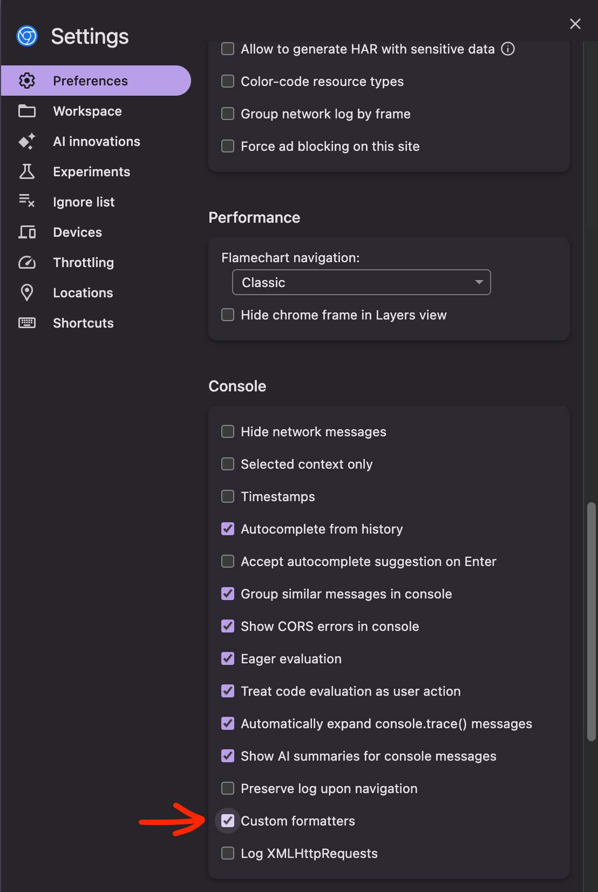
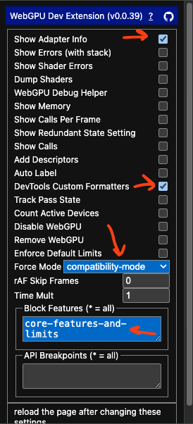
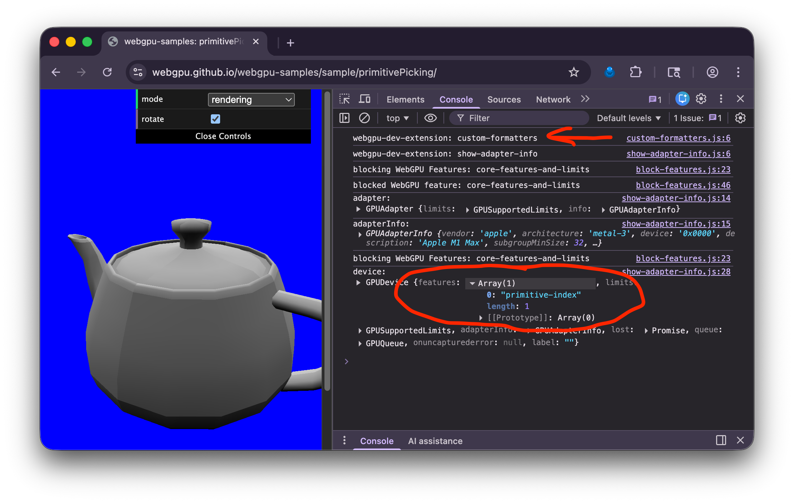

WebGPU 兼容性模式是 WebGPU 的一个版本，通过一些限制，可以在较旧的设备上运行。其理念是，如果你能让你的应用在额外的限制和约束条件下运行，那么你可以请求一个 webgpu 兼容性适配器，让你的应用在更多地方运行。
注意：兼容性模式正在 Chrome 146 中发布（2026-02-23）。在你的浏览器中可能作为实验性功能可用。在 Chrome Canary 中，从版本 136.0.7063.0（2025-03-11）开始，你可以通过启用 “enable-unsafe-webgpu” 标志来允许兼容性模式，方法是通过访问
chrome://flags/#enable-unsafe-webgpu。
为了让你了解在兼容性模式下能做什么，实际上几乎所有 WebGL2 程序都可以转换为在兼容性模式下运行。
下面是具体的实现方法。
const adapter = await navigator.gpu.requestAdapter({
featureLevel: 'compatibility',
});
const device = await adapter.requestDevice();
就这么简单！请注意，每个遵循兼容性模式所有限制的应用都是一个有效的 “核心” webgpu 应用，可以在任何已支持 WebGPU 的地方运行。
最有可能影响 WebGPU 应用的主要限制是，大约 45% 的这些旧设备在顶点着色器中不支持 storage buffers（存储缓冲区）。
我们在关于 storage buffers 的文章中使用了这个特性，这是本站的第三篇文章。在那篇文章之后，我们改用顶点缓冲区。使用顶点缓冲区是常见的做法，在任何地方都能工作，但某些解决方案使用 storage buffers 会更简单。例如这个绘制线框的示例。它使用 storage buffers 从顶点数据生成三角形。
将顶点数据存储在 storage buffers 中，我们可以随机访问顶点数据。而将顶点数据存储在顶点缓冲区中则无法做到这一点。当然，总是有其他的解决方案。
TEXTURE_BINDING 使用时，只允许一种视图维度在标准 WebGPU 中，你可以像这样创建一个二维纹理：
const myTexture = device.createTexture({
size: [width, height, 6],
usage: ...
format: ...
});
然后你可以用 3 种不同的视图维度来查看它：
// 将 myTexture 作为包含 6 层的二维数组视图
const as2DArray = myTexture.createView();
// 将 myTexture 的第 3 层作为二维纹理视图
const as2D = myTexture.createView({
dimension: '2d',
baseArrayLayer: 3,
arrayLayerCount: 1,
});
// 将 myTexture 作为立方体贴图视图
const asCube = myTexture.createView({
dimension: 'cube',
});
在兼容性模式下，你只能使用一种视图维度，而且你必须在创建纹理时就选择使用哪种视图维度。只有 1 层的二维纹理默认为只能作为 '2d' 视图使用。超过 1 层的二维纹理默认为只能作为 '2d-array' 视图使用。如果你想使用默认方式以外的其他方式，你必须告诉 WebGPU。例如，如果你想要一个立方体贴图，你必须在创建纹理时告诉 WebGPU。
const cubeTexture = device.createTexture({
size: [width, height, 6],
usage: ...
format: ...
textureBindingViewDimension: 'cube',
});
请注意，这个额外的参数叫做 textureBindingViewDimension，因为它涉及到以 TEXTURE_BINDING 方式使用纹理。你仍然可以将立方体贴图或二维数组的一层作为 RENDER_ATTACHMENT 使用的二维纹理。
换句话说，在绑定组中使用纹理时，你必须使用相同的视图维度。即使 textureBindingViewDimension 是 2d-array 或 cube，当将纹理用作渲染目标时，你仍然可以使用 2d 维度。
在兼容性模式下，在绑定组中使用其他类型的视图会产生验证错误。
// 将 cubeTexture 作为包含 6 层的二维数组视图
const bindGroup = device.createBindGroup({
...
entries: [
{
binding,
// 兼容性模式下的错误：纹理是立方体贴图而不是二维数组
//（具有多层纹理的默认视图）
resource: cubeTexture,
},
],
})
// 将 cubeTexture 的第 3 层作为二维纹理视图
const bindGroup = device.createBindGroup({
...
entries: [
{
binding,
// 兼容性模式下的错误：纹理是立方体贴图而不是二维
resource: cubeTexture.createView({
viewDimension: '2d',
baseArrayLayer: 3,
arrayLayerCount: 1,
}),
},
]
});
// 将 cubeTexture 作为立方体贴图视图
const bindGroup = device.createBindGroup({
...
entries: [
{
binding,
// 正确！
resource: cubeTexture.createView({
viewDimension: 'cube',
}),
},
],
});
这个限制并不是什么大问题。很少有程序想要使用不同视图类型的纹理。
texture.createView 时，不能在绑定组中选择图层的子集在核心 WebGPU 中，我们可以创建一个包含若干层的纹理：
const texture = device.createTexture({
size: [64, 128, 8], // 8 层,
...
});
然后我们可以选择一个图层子集：
const bindGroup = device.createBindGroup({
...
entries: [
{
binding,
// 兼容性模式下的错误 - 选择第 3 和第 4 层
resource: cubeTexture.createView({
baseArrayLayer: 3,
arrayLayerCount: 2,
}),
},
],
});
这个限制也不是什么大问题。很少有程序想要从纹理中选择一个图层子集。
不过有一个地方会同时遇到上述两个限制，那就是生成 mipmap，这是一个常见的用例。
回想一下，我们在将图像导入纹理的文章中实现了一个基于 GPU 的 mipmap 生成器。我们将其修改为在立方体贴图的文章中为二维数组和立方体贴图生成 mipmap。在那个版本中，我们总是使用 '2d' 维度查看纹理的每一层，以仅引用纹理的一层。这在兼容性模式下不适用，原因如上所述。我们不能将 '2d-array' 或 'cube' 纹理用作 '2d' 视图。我们也不能在绑定组中选择单独的层来选择要读取的层。
为了让代码在兼容性模式下工作，我们必须使用与创建时相同的视图维度来处理纹理，我们需要传入具有所有图层访问权限的纹理，并在着色器本身中选择我们想要的层，而不是像我们之前做的那样通过 createView 来选择层。
让我们开始吧！我们将从立方体贴图文章中的 generateMips 代码开始。
const generateMips = (() => {
let sampler;
let module;
const pipelineByFormat = {};
return function generateMips(device, texture) {
if (!module) {
module = device.createShaderModule({
label: 'textured quad shaders for mip level generation',
code: /* wgsl */ `
struct VSOutput {
@builtin(position) position: vec4f,
@location(0) texcoord: vec2f,
};
@vertex fn vs(
@builtin(vertex_index) vertexIndex : u32
) -> VSOutput {
let pos = array(
vec2f( 0.0, 0.0), // center
vec2f( 1.0, 0.0), // right, center
vec2f( 0.0, 1.0), // center, top
// 2st triangle
vec2f( 0.0, 1.0), // center, top
vec2f( 1.0, 0.0), // right, center
vec2f( 1.0, 1.0), // right, top
);
var vsOutput: VSOutput;
let xy = pos[vertexIndex];
vsOutput.position = vec4f(xy * 2.0 - 1.0, 0.0, 1.0);
vsOutput.texcoord = vec2f(xy.x, 1.0 - xy.y);
return vsOutput;
}
@group(0) @binding(0) var ourSampler: sampler;
@group(0) @binding(1) var ourTexture: texture_2d<f32>;
@fragment fn fs(fsInput: VSOutput) -> @location(0) vec4f {
return textureSample(ourTexture, ourSampler, fsInput.texcoord);
}
`,
});
sampler = device.createSampler({
minFilter: 'linear',
magFilter: 'linear',
});
}
if (!pipelineByFormat[texture.format]) {
pipelineByFormat[texture.format] = device.createRenderPipeline({
label: 'mip level generator pipeline',
layout: 'auto',
vertex: {
module,
},
fragment: {
module,
targets: [{ format: texture.format }],
},
});
}
const pipeline = pipelineByFormat[texture.format];
const encoder = device.createCommandEncoder({
label: 'mip gen encoder',
});
for (let baseMipLevel = 1; baseMipLevel < texture.mipLevelCount; ++baseMipLevel) {
for (let layer = 0; layer < texture.depthOrArrayLayers; ++layer) {
const bindGroup = device.createBindGroup({
layout: pipeline.getBindGroupLayout(0),
entries: [
{ binding: 0, resource: sampler },
{
binding: 1,
resource: texture.createView({
dimension: '2d',
baseMipLevel: baseMipLevel - 1,
mipLevelCount: 1,
baseArrayLayer: layer,
arrayLayerCount: 1,
}),
},
],
});
const renderPassDescriptor = {
label: 'our basic canvas renderPass',
colorAttachments: [
{
view: texture.createView({
dimension: '2d',
baseMipLevel: baseMipLevel,
mipLevelCount: 1,
baseArrayLayer: layer,
arrayLayerCount: 1,
}),
loadOp: 'clear',
storeOp: 'store',
},
],
};
const pass = encoder.beginRenderPass(renderPassDescriptor);
pass.setPipeline(pipeline);
pass.setBindGroup(0, bindGroup);
pass.draw(6); // 调用顶点着色器 6 次
pass.end();
}
}
const commandBuffer = encoder.finish();
device.queue.submit([commandBuffer]);
};
})();
我们需要修改 WGSL 代码，对于每种类型的纹理（二维、二维数组、立方体等），使用不同的片段着色器，并且需要能够传入要读取的层。
+const faceMat = array(
+ mat3x3f( 0, 0, -2, 0, -2, 0, 1, 1, 1), // pos-x
+ mat3x3f( 0, 0, 2, 0, -2, 0, -1, 1, -1), // neg-x
+ mat3x3f( 2, 0, 0, 0, 0, 2, -1, 1, -1), // pos-y
+ mat3x3f( 2, 0, 0, 0, 0, -2, -1, -1, 1), // neg-y
+ mat3x3f( 2, 0, 0, 0, -2, 0, -1, 1, 1), // pos-z
+ mat3x3f(-2, 0, 0, 0, -2, 0, 1, 1, -1)); // neg-z
struct VSOutput {
@builtin(position) position: vec4f,
@location(0) texcoord: vec2f,
+ @location(1) @interpolate(flat, either) baseArrayLayer: u32,
};
@vertex fn vs(
@builtin(vertex_index) vertexIndex : u32,
+ @builtin(instance_index) baseArrayLayer: u32,
) -> VSOutput {
var pos = array<vec2f, 3>(
vec2f(-1.0, -1.0),
vec2f(-1.0, 3.0),
vec2f( 3.0, -1.0),
);
var vsOutput: VSOutput;
let xy = pos[vertexIndex];
vsOutput.position = vec4f(xy, 0.0, 1.0);
vsOutput.texcoord = xy * vec2f(0.5, -0.5) + vec2f(0.5);
+ vsOutput.baseArrayLayer = baseArrayLayer;
return vsOutput;
}
@group(0) @binding(0) var ourSampler: sampler;
-@group(0) @binding(1) var ourTexture: texture_2d<f32>;
+@group(0) @binding(1) var ourTexture2d: texture_2d<f32>;
@fragment fn fs2d(fsInput: VSOutput) -> @location(0) vec4f {
- return textureSample(ourTexture, ourSampler, fsInput.texcoord);
+ return textureSample(ourTexture2d, ourSampler, fsInput.texcoord);
}
+@group(0) @binding(1) var ourTexture2dArray: texture_2d_array<f32>;
+@fragment fn fs2darray(fsInput: VSOutput) -> @location(0) vec4f {
+ return textureSample(
+ ourTexture2dArray,
+ ourSampler,
+ fsInput.texcoord,
+ fsInput.baseArrayLayer);
+}
+
+@group(0) @binding(1) var ourTextureCube: texture_cube<f32>;
+@fragment fn fscube(fsInput: VSOutput) -> @location(0) vec4f {
+ return textureSample(
+ ourTextureCube,
+ ourSampler,
+ faceMat[fsInput.baseArrayLayer] * vec3f(fract(fsInput.texcoord), 1));
+}
这段代码有 3 个片段着色器，分别用于 '2d'、'2d-array' 和 'cube'。它使用了大三角形覆盖裁剪空间技术来绘制。它还使用 @builtin(instance_index) 来选择层。这是一种有趣且快速的方式，可以将单个整数值传递给着色器，而无需使用 uniform 缓冲区。当我们调用 draw 时，第 4 个参数是第一个实例，它将作为 @builtin(instance_index) 传递给着色器。我们从顶点着色器将其传递到片段着色器，通过 VSOutput.baseArrayLayer，我们可以在片段着色器中引用为 fsInput.baseArrayLayer。
立方体贴图代码将二维数组层和归一化的 UV 坐标转换为立方体贴图的三维坐标。我们需要这个，因为在兼容性模式下，立方体贴图只能作为立方体贴图来查看。
回到 JavaScript，我们需要从纹理中读取 textureBindingViewDimension 属性。请注意，如果我们不在兼容性模式下，这个值是 undefined。但是，我们可以假设在这种情况下是 '2d-array'，因为在标准 “核心” webgpu 中，'2d-array' 应该始终有效。
const generateMips = (() => {
let sampler;
let module;
const pipelineByFormat = {};
return function generateMips(device, texture) {
+ // 如果纹理没有 textureBindingViewDimension，则使用 '2d-array'
+ const textureBindingViewDimension = texture.textureBindingViewDimension ?? '2d-array';
if (!module) {
module = device.createShaderModule({
label: 'textured quad shaders for mip level generation',
code: /* wgsl */ `
const faceMat = array(
mat3x3f( 0, 0, -2, 0, -2, 0, 1, 1, 1), // pos-x
mat3x3f( 0, 0, 2, 0, -2, 0, -1, 1, -1), // neg-x
mat3x3f( 2, 0, 0, 0, 0, 2, -1, 1, -1), // pos-y
mat3x3f( 2, 0, 0, 0, 0, -2, -1, -1, 1), // neg-y
mat3x3f( 2, 0, 0, 0, -2, 0, -1, 1, 1), // pos-z
mat3x3f(-2, 0, 0, 0, -2, 0, 1, 1, -1)); // neg-z
struct VSOutput {
@builtin(position) position: vec4f,
@location(0) texcoord: vec2f,
@location(1) @interpolate(flat, either) baseArrayLayer: u32,
};
@vertex fn vs(
@builtin(vertex_index) vertexIndex : u32,
@builtin(instance_index) baseArrayLayer: u32,
) -> VSOutput {
var pos = array<vec2f, 3>(
vec2f(-1.0, -1.0),
vec2f(-1.0, 3.0),
vec2f( 3.0, -1.0),
);
var vsOutput: VSOutput;
let xy = pos[vertexIndex];
vsOutput.position = vec4f(xy, 0.0, 1.0);
vsOutput.texcoord = xy * vec2f(0.5, -0.5) + vec2f(0.5);
vsOutput.baseArrayLayer = baseArrayLayer;
return vsOutput;
}
@group(0) @binding(0) var ourSampler: sampler;
@group(0) @binding(1) var ourTexture2d: texture_2d<f32>;
@fragment fn fs2d(fsInput: VSOutput) -> @location(0) vec4f {
return textureSample(ourTexture2d, ourSampler, fsInput.texcoord);
}
@group(0) @binding(1) var ourTexture2dArray: texture_2d_array<f32>;
@fragment fn fs2darray(fsInput: VSOutput) -> @location(0) vec4f {
return textureSample(
ourTexture2dArray,
ourSampler,
fsInput.texcoord,
fsInput.baseArrayLayer);
}
@group(0) @binding(1) var ourTextureCube: texture_cube<f32>;
@fragment fn fscube(fsInput: VSOutput) -> @location(0) vec4f {
return textureSample(
ourTextureCube,
ourSampler,
faceMat[fsInput.baseArrayLayer] * vec3f(fract(fsInput.texcoord), 1));
}
`,
});
sampler = device.createSampler({
minFilter: 'linear',
magFilter: 'linear',
});
}
...
之前我们按格式跟踪管道，这样我们就可以重用相同格式的管道的管道。我们需要更新为按格式和视图维度来跟踪管道。
const generateMips = (() => {
let sampler;
let module;
- const pipelineByFormat = {};
+ const pipelineByFormatAndView = {};
return function generateMips(device, texture, textureBindingViewDimension) {
// 如果纹理没有 textureBindingViewDimension，则使用 '2d-array'。
// 这在核心 webgpu 模式下为真。
const textureBindingViewDimension = texture.textureBindingViewDimension ?? '2d-array';
let module = moduleByViewDimension[textureBindingViewDimension];
if (!module) {
...
}
+ const id = `${texture.format}.${textureBindingViewDimension}`;
- if (!pipelineByFormat[texture.format]) {
- pipelineByFormat[texture.format] = device.createRenderPipeline({
+ if (!pipelineByFormatAndView[id]) {
+ // 根据 viewDimension 选择片段着色器（移除 '2d-array' 和 'cube-array' 中的 '-'）
+ const entryPoint = `fs${textureBindingViewDimension.replace(/[\W]/, '')}`;
+ pipelineByFormatAndView[id] = device.createRenderPipeline({
+ label: `mip level generator pipeline for ${textureBindingViewDimension}, format: ${texture.format}`,
layout: 'auto',
vertex: {
module,
},
fragment: {
module,
entryPoint,
targets: [{ format: texture.format }],
},
});
}
- const pipeline = pipelineByFormat[texture.format];
+ const pipeline = pipelineByFormatAndView[id];
...
}
然后我们生成 mipmap 的循环需要更改为使用完整的图层，因为兼容性模式不允许使用图层的子范围。我们还需要使用通过 draw 传入实例索引的能力来选择要读取的层。
const generateMips = (() => {
...
const pipeline = pipelineByFormatAndView[id];
for (let baseMipLevel = 1; baseMipLevel < texture.mipLevelCount; ++baseMipLevel) {
for (let layer = 0; layer < texture.depthOrArrayLayers; ++layer) {
const bindGroup = device.createBindGroup({
layout: pipeline.getBindGroupLayout(0),
entries: [
{ binding: 0, resource: sampler },
{
binding: 1,
resource: texture.createView({
- dimension: '2d',
+ dimension: textureBindingViewDimension,
baseMipLevel: baseMipLevel - 1,
mipLevelCount: 1,
- baseArrayLayer: layer,
- arrayLayerCount: 1,
}),
},
],
});
const renderPassDescriptor = {
label: 'our basic canvas renderPass',
colorAttachments: [
{
view: texture.createView({
dimension: '2d',
baseMipLevel,
mipLevelCount: 1,
baseArrayLayer: layer,
arrayLayerCount: 1,
}),
loadOp: 'clear',
storeOp: 'store',
},
],
};
const pass = encoder.beginRenderPass(renderPassDescriptor);
pass.setPipeline(pipeline);
pass.setBindGroup(0, bindGroup);
- pass.draw(6);
+ // 绘制 3 个顶点，1 个实例，第一个实例（instance_index）= layer
+ pass.draw(3, 1, 0, layer);
pass.end();
}
}
const commandBuffer = encoder.finish();
device.queue.submit([commandBuffer]);
};
})();
这样，我们的 mipmap 生成代码就可以在兼容性模式下工作了，并且它仍然可以在核心 WebGPU 中工作。
不过，要使示例工作，我们还需要更新其他一些内容。
我们有一个 createTextureFromSources 函数，我们将数据源传递给它，它会创建一个纹理。它之前总是创建 '2d' 纹理，因为在核心模式下，我们可以将具有 6 层的 '2d' 纹理作为立方体贴图来查看。相反，我们需要让它能够传入 textureBindingViewDimension 和/或维度，这样当我们创建纹理时，我们可以告诉兼容性模式我们将如何查看它。
+ function textureViewDimensionToDimension(viewDimension) {
+ switch (viewDimension) {
+ case '1d': return '1d';
+ case '3d': return '3d';
+ default: return '2d';
+ }
+ }
function createTextureFromSources(device, sources, options = {}) {
+ const viewDimension = options.dimension ??
+ getDefaultViewDimensionForTexture(options.textureBindingViewDimension);
+ const dimension = options.dimension ?? textureViewDimensionToDimension(viewDimension);
// 假设所有数据源大小相同，因此只使用第一个的宽度和高度
const source = sources[0];
const texture = device.createTexture({
format: 'rgba8unorm',
mipLevelCount: options.mips ? numMipLevels(source.width, source.height) : 1,
size: [source.width, source.height, sources.length],
usage: GPUTextureUsage.TEXTURE_BINDING |
GPUTextureUsage.COPY_DST |
GPUTextureUsage.RENDER_ATTACHMENT,
+ dimension,
+ textureBindingViewDimension: options.textureBindingViewDimension,
});
copySourcesToTexture(device, texture, sources, options);
return texture;
}
而且，我们需要更新对 createTextureFromSources 的调用，提前告诉它我们想要一个立方体贴图。
const texture = await createTextureFromSources(
- device, faceCanvases, {mips: true, flipY: false});
+ device, faceCanvases, {mips: true, flipY: false, textureBindingViewDimension: 'cube'});
要使示例在兼容性模式下运行，我们需要像本文开头介绍的那样请求它。
async function main() {
- const adapter = await navigator.gpu?.requestAdapter()
+ const adapter = await navigator.gpu?.requestAdapter({
+ featureLevel: 'compatibility',
+ });
const device = await adapter?.requestDevice();
...
就这样，我们的立方体贴图示例就可以在兼容性模式下工作了。
现在你有了一个兼容兼容性模式的 generateMips，你可以在本站的任何示例中使用它。它在核心和兼容性模式下都可以工作。在兼容性模式下，如果你想要立方体贴图或者一层的二维数组，你必须传入 textureBindingViewDimension。在核心 WebGPU 中，你可以传入或不传入。它不重要。
以下是大多数程序不太可能遇到的限制和约束。
在核心模式下，当你创建渲染管道时，每个颜色目标可以指定混合设置。我们在关于混合和透明度的文章中使用了混合设置。在兼容性模式下，单个管道中所有颜色目标的设置必须相同。
copyTextureToBuffer 和 copyTextureToTexture 不支持压缩纹理copyTextureToTexture 不支持多重采样纹理cube-array在核心 WebGPU 中，你可以创建纹理的多个视图，指向不同的 mip 级别，并在同一绘制调用中使用它们。这并不常见。请注意，此限制适用于 TEXTURE_BINDING 用法，即通过绑定组使用纹理。你仍然可以像上面的 mipmap 生成代码中那样，将不同的视图用作 RENDER_ATTACHMENT。
@builtin(sample_mask) 和 @builtin(sample_index)rg32uint、rg32sint 和 rg32float 纹理格式不能用作存储纹理depthClampBias 必须为 0这是创建渲染管道时的一个设置。
@interpolation(linear) 和 @interpolation(..., sample)这些在关于阶段间变量的文章中简要提到过。
@interpolate(flat) 和 @interpolate(flat, first)在兼容性模式下，当你想使用扁平插值时，必须使用 @interpolate(flat, either)。either 表示传递给片段着色器的值可以是所绘制三角形或直线的第一个或最后一个顶点的值。由实现决定。
这通常并不重要。将扁平插值从顶点着色器传递到片段着色器的最常见用例通常是每模型、每材质或每实例类型的值。例如，上面的 mipmap 生成代码使用扁平插值将 instance_index 传递给片段着色。它对于三角形的所有顶点都是相同的，因此与 @interpolate(flat, either) 配合得很好。
在核心 WebGPU 中，你可以创建一个 'rgba8unorm' 纹理，并将其作为 'rgba8unorm-srgb' 纹理来查看，反之亦然，以及其他 '-srgb' 格式及其对应的非 '-srgb' 格式。兼容性模式不允许这样做。创建纹理时使用的是什么格式，它就只能作为该格式使用。
bgra8unorm-srgbrgba16float 和 r32float 纹理不能被多重采样depthOrArrayLayers 必须与 textureBindingViewDimension 兼容这意味着用 textureBindingViewDimension: '2d' 标记的纹理必须有 depthOrArrayLayers: 1（默认值）。用 textureBindingViewDimension: 'cube' 标记的纹理必须有 depthOrArrayLayers: 6。
textureLoad 不能与深度纹理一起使用“深度纹理” 是在 WGSL 中使用 texture_depth、texture_depth_2d_array 或 texture_depth_cube 引用的纹理。这些不能与 textureLoad 在兼容性模式下一起使用。
另一方面，textureLoad 可以与 texture_2d<f32>、texture_2d_array<f32> 和 texture_cube<f32> 一起使用，并且可以使用深度格式的纹理绑定到这些绑定。
同样，“深度纹理” 是在 WGSL 中使用 texture_depth、texture_depth_2d_array 或 texture_depth_cube 引用的纹理。这些不能与非比较采样器在兼容性模式下一起使用。
这实际上意味着 texture_depth、texture_depth_2d_array 和 texture_depth_cube 在兼容性模式下只能与 textureSampleCompare、textureSampleCompareLevel 和 textureGatherCompare 一起使用。
另一方面，你可以将使用深度格式的纹理绑定到 texture_2d<f32>、texture_2d_array<f32> 和 texture_cube<f32> 绑定，但须遵守通常的限制，即必须使用非过滤采样器。
WGSL 函数 dpdxFine、dpdyFine 和 fwidthFine 在兼容性模式下不支持。你仍然可以使用 dpdx、dpdxCoarse、dpdy、dpdyCoarse、fwidth 和 fwidthCoarse。
在核心模式下，你可以绑定 16+ 个纹理和 16+ 个采样器，然后在着色器中使用所有 256+ 种组合。
在兼容性模式下，你只能在单个阶段中使用 16 种组合。
实际规则稍微复杂一些。以下是伪代码：
maxCombinationsPerStage =
min(device.limits.maxSampledTexturesPerShaderStage, device.limits.maxSamplersPerShaderStage)
for each stage of the pipeline:
sum = 0
for each texture binding in the pipeline layout which is visible to that stage:
sum += max(1, number of texture sampler combos for that texture binding)
for each external texture binding in the pipeline layout which is visible to that stage:
sum += 1 // for LUT texture + LUT sampler
sum += 3 * max(1, number of external_texture sampler combos) // for Y+U+V
if sum > maxCombinationsPerStage
generate a validation error.
| 限制 | 兼容性 | 核心 |
|---|---|---|
maxColorAttachments |
4 | 8 |
maxComputeInvocationsPerWorkgroup |
128 | 256 |
maxComputeWorkgroupSizeX |
128 | 256 |
maxComputeWorkgroupSizeY |
128 | 256 |
maxInterStageShaderVariables |
15 | 16 |
maxTextureDimension1D |
4096 | 8192 |
maxTextureDimension2D |
4096 | 8192 |
maxUniformBufferBindingSize |
16384 | 65536 |
maxVertexAttributes |
16a | 16 |
(a) 在兼容性模式下，使用 @builtin(vertex_index) 和/或 @builtin(instance_index) 各自计为一个属性。
当然，适配器可能为其中任何一项支持更高的限制。
maxStorageBuffersInVertexStage（默认 0）maxStorageTexturesInVertexStage（默认 0）maxStorageBuffersInFragmentStage（默认 4）maxStorageTexturesInFragmentStage（默认 4）与其他限制一样，你可以在请求适配器时检查适配器支持什么，如果你需要更多，可以要求更高的默认值。
如上所述，大约 45% 的设备支持在顶点着色器中使用 0 个存储缓冲区和存储纹理。
兼容性模式是为了让你选择加入而设计的。如果你能让你的应用在上述限制下运行，那么你可以请求兼容性模式。如果不能，就请求核心模式，即默认值，如果设备不能处理核心模式，它将不会返回适配器。
另一方面，你也可以设计你的应用在兼容性模式下运行，但如果用户有支持核心 WebGPU 的设备，则可以利用所有核心特性。
要做到这一点，请求兼容性模式适配器，然后检查并启用 core-features-and-limits 特性。如果适配器上存在此特性，并且你在设备上要求它，设备将是核心设备，上述限制都不会适用。
示例：
const adapter = await navigator.gpu.requestAdapter({
featureLevel: 'compatibility',
});
const hasCore = adapter.features.has('core-features-and-limits');
const device = await adapter.requestDevice({
requiredFeatures: [
...(hasCore ? ['core-features-and-limits'] : []),
],
});
如果 hasCore 为 true，则上述限制和约束都不适用。
请注意，想要检查设备是核心设备还是兼容性设备的其他代码应检查设备的特性。
const isCore = device.features.has('core-features-and-limits');
这在核心设备上始终为真。
在支持兼容性模式的浏览器中，你可以通过不请求 'core-features-and-limits'（如上所述）来测试你的应用是否遵循限制。你可能想检查你实际上拥有的是兼容性设备，这样你就可以知道限制和约束正在被强制执行。
const adapter = await navigator.gpu.requestAdapter({
featureLevel: 'compatibility',
});
const device = await adapter.requestDevice();
const isCompatibilityMode = !device.features.has('core-features-and-limits');
这是一种测试你的应用是否可以在这些旧设备上运行的好方法。
使用 webgpu-dev-extension，你可以强制你的应用使用兼容性模式，作为一种快速测试，无需对你的应用进行任何更改。你也可以测试一个自动升级到核心 webgpu 的应用，在获得兼容性模式时是否正常工作。
步骤：
打开开发者工具并运行你的应用
在 Devtools 中打开设置

开启 “Custom Formatters”

在 WebGPU-Dev-Extension 中，选择以下选项：

这使得应用执行 navigator.gpu.requestAdapter({ featureLevel: 'compatibility' });
如果你的应用已经支持兼容性模式，请保持此设置为默认值。
这使得应用无法请求核心模式
这使得在 Devtools 中检查设备时，会将 device.features 显示为字符串数组。没有这个，devtools 会显示一个不透明的对象，所以你无法看到特性
此选项使它在创建新的适配器或设备时执行 console.log(adapter) 和 console.log(device)。这让你可以验证设备处于兼容性模式。你可以检查 device.features 并确认它没有 ‘core-features-and-limits’
刷新页面
验证你的应用正在兼容性模式下运行
在 JavaScript 控制台中，你应该看到类似这样的内容：

在顶部附近查找 webgpu-dev-extension: custom-formatters 以验证格式化器已注入页面
然后，找到 GPUDevice 并展开 features。确保你没有看到 "core-features-and-limits"。
截至 2026-02-01，webgpu-samples 上的所有本地示例都可以工作，threejs.org/examples 上的 193 个 webgpu 示例中有 185 个可以在兼容性模式下工作。其余 8 个未来可能会通过少量调整也可以在兼容性模式下工作。